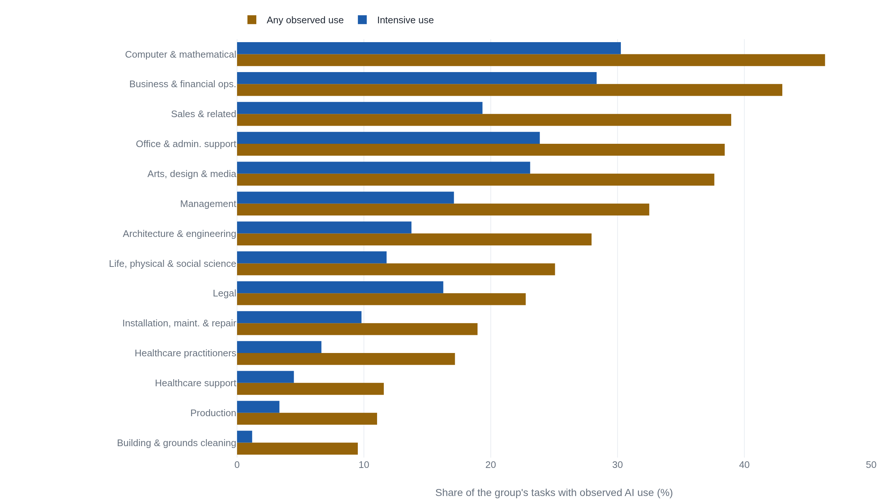

Google's economy ATLAS measures how much people talk to Gemini about work
Its most-quoted figure, 30% of U.S. work-related AI use among computer and mathematical workers, is a share of Gemini request volume the released dataset reproduces only as 20.06%.
Fourteen million conversations, sorted by a classifier
Between 6 and 19 April 2026, Google and Google DeepMind recorded 14,653,926 de-identified interactions across the Gemini app, Google AI Mode, and the Gemini API, and an automated classifier sorted each one into work or non-work.1 The work interactions were mapped to the 2018 Standard Occupational Classification and to O*NET tasks. The project that resulted, published on 15 September as the AI and Economy ATLAS, reports shares: what fraction of work-related AI use falls to each occupation group and each country.12
The report is exact about what a share counts. Its definition of a
usage share is the relative volume of conversational AI queries
associated with an occupation group,2
and Section 2.3 states that the work
measures behavioral interactions, not definitive productivity
outcomes
, and that a completed conversation
does not guarantee that the user accomplished their intended goal,
saved time, or produced measurable economic value
.1
What gets quoted from the ATLAS is a different claim: that a 30% share
of work-related AI use measures how much of a job AI now performs. It
measures how much one group of workers talks to Gemini about work.
What the shares are shares of
A share is a ratio, and the denominator here is request volume within a geography. The ATLAS reports that computer and mathematical occupations account for 30% of United States work-related AI use, which the announcement describes as about double the share in the rest of the world.13 Those occupations are about 3 to 4% of United States employment.1 The 30% is therefore a statement about concentration in a pool of conversations: a small part of the workforce sends a large part of the work-related queries that reach Gemini. It moves when that group talks to Gemini more or less, and it would move if the people who send the other 70% changed how often they typed.
The exact figure is owned by the report's Figure 1 and the
interactive, not by the released data.14 Google's public
dataset gives occupation volume shares only at the broad level, and
summing every United States computer-and-mathematical broad group in
it reaches 20.06%, not 30%.5
The README explains the difference: broad shares exclude the
All Other
detailed occupations, so they do not aggregate to the
major-group total the headline uses.5
The double the rest of the world
comparison implies a
rest-of-world share near 15%, a number the public files do not print.
That 15% is a back-calculation from the multiplier, not a published
figure.
The country figures read the same way, and the interactive carries them from its own data rather than the public files.4 Each one is a share of that country's work-related request volume. India's 19% for arts, design, and media says those fields are a large part of what Indian users bring to Gemini, not that AI does 19% of creative work.43
| Figure | What the number measures | Source |
|---|---|---|
| 30% of U.S. work-related AI use, computer and mathematical occupations | Share of U.S. work-related Gemini request volume, 6-19 April 2026; those jobs are about 3 to 4% of U.S. employment | Report, Fig 11; announcement3 |
| 19% in India, arts, design, and media (1.6x the global average) | Share of India's work-related request volume | Interactive4; announcement3 |
| 7% on manual tasks in Brazil and Germany (1.4x), 4% in Japan | Share of each country's work-related request volume directed at manual tasks | Interactive4; announcement3 |
| 46.6% of scientists use AI daily | Self-reported frequency; 637 U.S. and U.K. scientists, unweighted, not representative | AI in Science, Fig 116 |
| About 6.9 hours a week saved | Self-reported net time saving; same 637-scientist survey | AI in Science, Sec 5.26 |
The shares also leave out paid and enterprise Gemini API usage, which the report lists as its first limitation, so professional and enterprise work is under-represented in every figure above by the authors' own account.1
How deep the use runs inside a job
The interactive separates two quantities that the headline shares fold together. In its occupation chart, a circle's position is the share of an occupation's tasks that show non-negligible AI use, and the circle's size is the volume of use.4 Position is depth inside a job; size is the share of the usage pool. The 30% is a size.
Depth is shallow almost everywhere. Across occupations with any observed use, AI appears in about 21% of tasks for the median occupation, 68.5% of occupations show some use, and only 3% show use on more than three-quarters of their tasks.14 End-to-end automation attempts are under 10% of non-routine-cognitive conversations, which are themselves about 65% of all work interactions.1
The depth metric is reported for each major occupation group, and even the group that sends the most work queries stays well under half its tasks.

So the occupation group with the largest share of work-related AI use is also one where most of its tasks show no AI use at all. The two facts do not conflict. A share of the usage pool and a share of a job's tasks are different measurements, and the ATLAS reports both.
Almost seven hours, by self-report
The science strand comes from a different instrument. For the AI in Science paper, a third-party firm surveyed 637 active scientists in the United States and the United Kingdom through the More in Common online panel between 27 July and 11 August 2026, screened on four criteria. The results are reported unweighted and, in the authors' words, not representative of the universe of scientists.6 The paper classifies scientific work against a MIT FutureTech taxonomy of 12 task areas and 2,433 task groups, built from job adverts, which defines a scientific job as one whose primary responsibility is to generate new scientific knowledge.7 In the sample, 46.6% report using AI daily and 77.2% weekly or more.6
The paper's most-quoted number is a net time saving. Just under three-quarters of respondents report that AI saves them time on net, against 6% reporting net time lost, and the average works out to about 6.9 hours a week.6 That is a distinct quantity from the roughly 7 hours a week the same scientists report spending on data analysis and interpretation. One is a reported saving, the other a reported workload. Both are self-reports. The 6.9 hours measures what a scientist believes AI saved, gathered by asking, not time measured against a baseline.
The authors name the direction of the likely error. Section 6.1 states
that enthusiastic AI users probably over-responded, so both the
adoption rate and the time saving are likely over-estimates of the
scientist population.6
A footnote on the log data marks the same boundary from the other
side: the interaction counts give
the absolute numbers of requests
, and
we also do not see task completion or saved time
.6
The gap between felt time and measured time
Two studies outside the ATLAS bear on the step from a reported saving to an economic one. Neither looks at scientists, so neither refutes the survey. They set the bounds on what a self-reported saving can carry.
A 2025 randomized controlled trial from METR had 16 experienced open-source developers complete 246 real tasks from their own repositories, half with early-2025 AI tools allowed and half without. With the tools allowed they took 19% longer, after forecasting a 24% speed-up and while still believing afterward that AI had sped them up by about 20%.8 The result is a point estimate for expert open-source work with early-2025 tools, and METR has said a February 2026 follow-up on later tools found different results.8
A 2025 labor-economics study by Humlum and Vestergaard linked two large adoption surveys across 11 exposed occupations to Danish employer-employee records. Adoption was fast, and self-reported time savings were real but small, about 3% of hours. Difference-in-differences estimates found no effect on earnings or recorded hours, with confidence intervals ruling out gains larger than 1 to 2%.9 Reported saved time and measured hours came apart, partly because new AI-created tasks offset some of the saving.9
The survey's 46.6% daily use and 6.9 hours are consistent with heavy adoption. They are not, on their own, evidence that measured research hours fell or that output rose, which is the inference these two studies constrain.
What the 30% and the 6.9 hours will bear
The ATLAS establishes some things cleanly. Work-related AI use is spread across almost every occupation and concentrated in a few. Within jobs it is shallow, reaching about a fifth of tasks in the median occupation. Full automation is attempted in under a tenth of non-routine-cognitive conversations.14 Those are findings about a classifier's read of 14.65 million conversations, and they are reported as such.
What the figures do not establish is set by the same definitions. The 30% establishes that computer and mathematical workers are heavily over-represented among the people sending work-related queries to Gemini in April 2026. It does not establish that AI performs 30% of their work, or that any hours were saved, and the released data reproduces it only as 20.06%.15 The 6.9 hours establishes what the median surveyed scientist believes AI saved them. It does not establish measured hours or output, and the people who answered are, by the authors' account, the enthusiasts.6
The 30% is a share of conversations and the 6.9 hours is a belief about time, and an account of AI at work that quotes either one as a measure of work done has changed the quantity without saying so.
Sources
- Google & Google DeepMind · AI and Economy ATLAS v1.0 (report)
- Google · AI and Economy ATLAS methodology note
- Google · The AI and Economy ATLAS (announcement post)
- Google · AI and Economy ATLAS (interactive)
- Google · AI and Economy ATLAS public dataset and data dictionary
- Google, Google DeepMind & MIT FutureTech · AI in Science: Early Insights (September 2026)
- MIT FutureTech · Scientific Work (Emmens, Liu, Trišović, Thompson)
- METR · Measuring the impact of early-2025 AI on experienced open-source developer productivity
- Becker Friedman Institute · Large language models, small labor market effects (Humlum & Vestergaard)